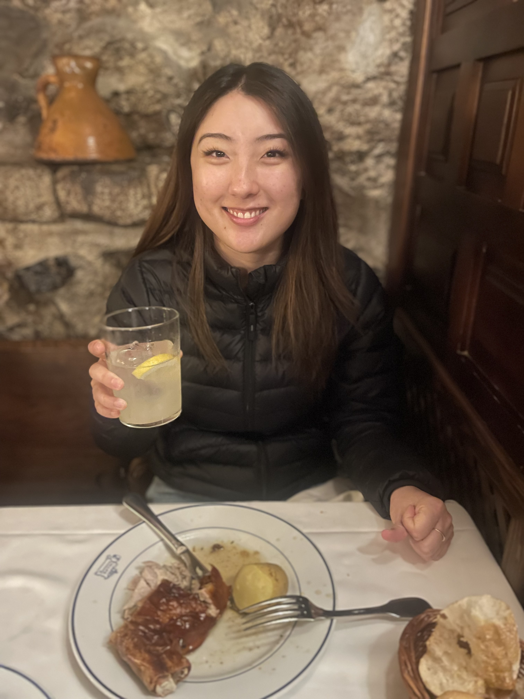
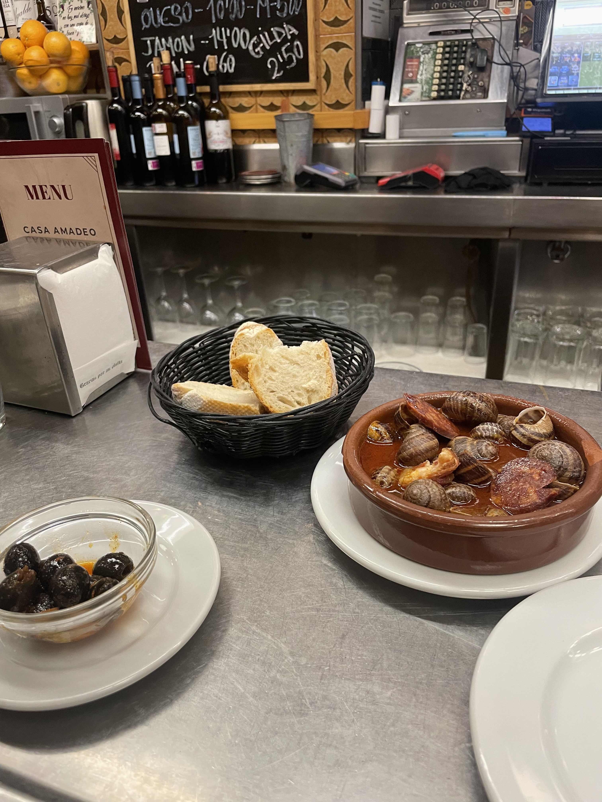
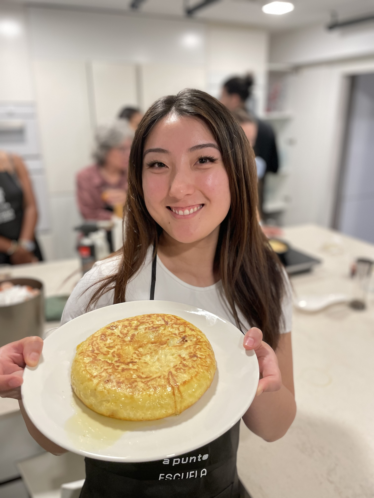
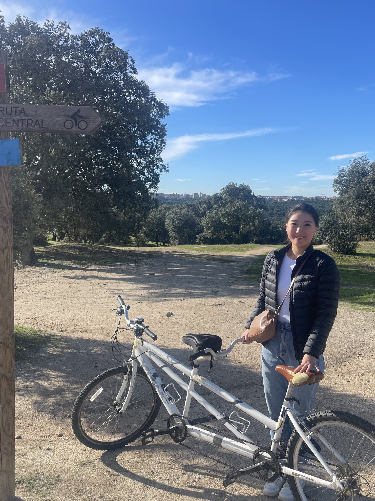

← Travel
Madrid 2024
Moving on from Barcelona, we went to Madrid!

23rd October 2024
We hopped on a renfe high speed train down to Madrid. On arrival we needed to fill our bellies, so we decided to go to the 'oldest restaurant' in the world. We ordered a serving of pork and it was the juciest most delicious pork we had ever had! We then toured through the Royal Palace of Madrid, it was room after room of elegant decor. We finished off the day by drinking home made sangrias and eating local calamari sandwhiches which were a little on the dry side but still yummy!

24th October 2024
A change of pace saw us head to El Retiro park to smell the roses and other flowers. We stopped off for a local delicacy for lunch...which consisted of snails and olives! Surprisingly the snails were quite yummy although the thought of them challenged Sophie. We took the rest of the day off to relax and recooperate.

25th October 2024
In the morning we treated ourselve to a Madrid style breakfast of hot chocolate with biscuits. The hot chocolate was too rich for me! We moved on to taking a cooking class where we made spanish tortillas, patatas bravas and many more! My favourite was the tomato focacia and the guzpacho soup. Yum!

26th October 2024
Our final day in Madrid we tried something different, tandem cycling in Casa de Campo! After a few false starts in the parking lot, we set up to the top of the hill and took a lovely route back down with a view of Madrid. Next up was another high speed train to Seville. We were mesmerised by the close winding streets and the orange trees as we made our way to the airbnb. We had time to stop off for chocolate covered churros as well!